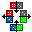

| Open Source Distributed Capabilities |
Welcome to ERights.org,
home of E,
the secure distributed persistent language
for capability-based smart contracting.
We do not influence the course of events by persuading people that we are right when we make what they regard as radical proposals. Rather, we exert influence by keeping options available when something has to be done at a time of crisis.--Milton Friedman
| The ERights Wiki | We have moved much of this site to this wiki, and intend to move the remainder. Please check there first. | |
Quick Start for E Language Programming: |
||
| E has two implementations: One based on Java and one based on Common Lisp. | ||
Get E-on-Java. (All licenses are Mozilla or Mozilla compatible open source licenses.) |
||
|
Kevin Reid's E-on-CL project now has its own page. (All licenses are MIT X or similar open source licenses.) | |
You don't need to install E to try it out. Just join the IRC channel #erights on irc.freenode.net, and type ? 1 + 1 |
||
| E is described by two draft books. | ||
|
MarkM's dissertation. Explains the rationale, philosophy, and goals of E and related systems. |
|
| |
Marc Stiegler's draft tutorial book on the E programming language. Now on the ERights Wiki. | |
| Tutorial | Additional useful introductory material. | |
| Quick Reference Card | Reminders of some useful patterns you've learned. | |
| The ERights Wiki | We intend to move much of the material currently at this website into this wiki. Stay tuned. | |
| e-lang and cap-talk email archives | Browse archived discussions of E and Capabilities. Here's some actual e-lang discussion as presented by Ping's experimental email browsing software. Here's a larger example. | |
| An Ode to the Granovetter Diagram | Also known as Capability-based Financial Instruments. Explains the rationale for E from lambda-calculus concepts up through Smart Contracts. | |
| Combex, Inc. | The for-profit facet of the E project, featuring CapDesk -- the capability secure desktop, and caplet installation and launching framework. | |
What's New? |
||
The
ERights Wiki goes live! |
||
| Highlights of "What's New?" past. | ||
What is E?E defines and implements a pure object model of secure distributed persistent computation. It has two parts: |
||
| ELib provides the stuff that goes on between objects. | ||
 |
As a pure-Java library, ELib provides for inter-process capability-secure distributed programming. Its cryptographic capability protocol enables mutually suspicious Java processes to cooperate safely, and its event-loop concurrency and promise pipelining enable high performance deadlock free distributed pure-object computing. | |
| The E Language can be used to express what happens within an object. | ||
|
The E language provides a convenient and familiar notation for the ELib computational model, so you can program in one model rather than two. Under the covers, this notation expands into Kernel-E, a minimalist lambda-language much like Scheme or Smalltalk. Objects written in the E language are only able to interact with other objects according to ELib's semantics, enabling object granularity intra-process security, including the ability to safely run untrusted mobile code (such as caplets). |
|
Smart Contracts: Patterns of Cooperation without Vulnerability |
||
| A contract is a mutually agreeable arrangement of rules among mutually suspicious parties so they may cooperate with limited risks to each other's mischief. It is a game both are willing to play because both expect to win. A conventional contract is passive paper interpreted at great expense by lawyers and courts. A smart contract is written in program code, in which the logic of the program's execution enforce the terms of the contract. Smart contracts reduce costs by orders of magnitude, leading to a more cooperative world. |
||
History: Where does E come from?TalksRelated Links |
||
Feedback Please |
||
| webmaster-at-erights.org | To send me comments directly. Here's my public key. | |
| Report a bug | Please let us know of all problems you find. Thanks! | |
| Is this page Valid HTML? | If not, please tell me (the webmaster) or report the bug. | |
| Donations | Please help support the E Project. | |
 |
We thank IntelliJ for their support of open source projects, including ours. | |
 |
Click to see prices for this and other related domain names. | |
Unless stated otherwise, all text on this page which is either unattributed or by Mark S. Miller is hereby placed in the public domain.